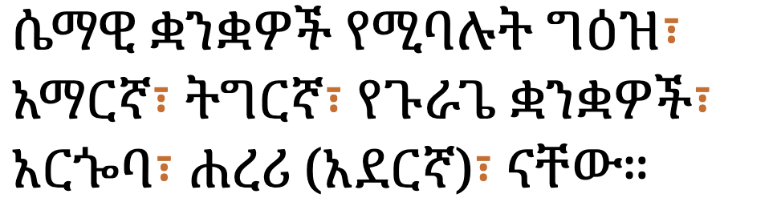

This page brings together basic information about the Ethiopic script and its use for the Amharic language. It aims to provide a brief, descriptive summary of the modern, printed orthography and typographic features, and to advise how to write Amharic using Unicode.
The Ethiopic, or Geʽez, script is widely used for writing the Ethiopian and Eritrean Semitic languages such as Tigré, Amharic and Tigrinya. It is also used for Gurage, Me'en, and most other languages of Ethiopia. In Eritrea it is used traditionally used for Blin, a Cushitic language. Some other languages in the Horn of Africa, such as Oromo, used to be written using Geʽez, but have migrated to Latin-based orthographies.
With 31 million mother-tongue speakers, and more than 25 million second language speakers. Amharic is the most widely spoken language in Ethiopia, and the second most spoken mother-tongue (after Oromo). It serves as the official working language of the Ethiopian federal government, and of several of Ethiopia's federal regions.wam
ግዕዝgəʿəzəgəʿəzGeʽezፊደል
The Ethiopic (Geʽez) script was developed as the writing system of the Geʽez language, a Semitic language spoken in Ethiopia and Eritrea until the 10th to the 12th centuries. The Geʽez language is now only in liturgical use.
The basic consonant shapes come from the original Geʽez script, which was an abjad. The script became an abugida when small changes were added to those shapes to indicate the following vowel sound. Each complete syllable is now represented by a single syllabic character in the Unicode repertoire. The original Ethiopic script contained 182 characters, although the basic (unmarked) consonants number only 26. Script extensions for other languages have added many more symbols, and often represent phonological processes such as palatalization, pharyngealization and labialization.
According to ScriptSource, the script is believed by many to have derived from the epigraphic South Arabian script, of Proto-Sinaitic heritage, although there is some dispute surrounding this assertion; some also believe it to have descended from Egyptian hieroglyphics. According to the tradition of the Ethiopian Orthodox Tewahedo Church, the script was divinely revealed to Enos, grandson of the first man, Adam.
The Ethiopic script is a featural syllabary, ie. each symbol typically represents both a consonant and a vowel, but vowel components are indicated by largely standardised adaptations to the base consonant shape. See the table to the right for a brief overview of features for the modern Amharic orthography.
The Ethiopic script runs left to right in horizontal lines. There is no case distinction.
Modern Amharic generally uses spaces to separate words, but sometimes still uses the Ethiopic wordspace character, instead.
The Ethiopic script blocks in Unicode list over 453 characters. Amharic uses 282 syllable characters: comprising 15 standalone vowel syllables, and the remainder for CV syllables.
Gemination and consonant clusters are not indicated by the script (although some diacritics have been proposed for that, which are encoded in Unicode). Silent vowels are typically indicated using the 6th order -ə syllable, which creates some ambiguity.
The script has only the three just mentioned combining characters, which are rarely used. Characters don't interact, and the baseline is standard.
Ethiopic does have a range of native punctuation. In particular, although words in modern text are increasingly separated by spaces they may be separated by a wordspace character instead.
Ethiopic also has its own numeric digits, which are used in an additive way, rather than in the way numbers are formed in Western text.
This section looks at the vowel and consonant sounds of Amharic.
Click on the sounds to reveal locations in this document where they are mentioned.
Source Comrie. Phones in a lighter colour are non-native or allophones.
Vowel sounds
Much writing on Amharic has ɑ̈ and ə respectively for ə and ɨ. The sound ɨ only rarely occurs at the end of a word, and ə rarely at the beginning of a word. These letters are also often elided by adjacent vowel sounds.c
ɛ appears as a variant of e after h.c
Consonant sounds
labial
dental
alveolar
post-
alveolar
palatal
velar
glottal
stop
pb
td
kɡ
ʔ
ejectives
pʼ
tʼ
kʼkʷʼ
labialised
kʷɡʷ
affricate
t͡ʃd͡ʒ
ejective
t͡ʃˤ
fricative
fv
sz
ʃʒ
h
ejective/labialised
sʼ
hʷ
nasal
m
n
ɲ
approximant
w
l
j
trill/flap
rɾ
Note that t and d are produced with a dental articulation, ie t̪ and d̪.wa
p was introduced through loan words and is unaspirated (often confused with b).wa
Tone
Amharic is not a tonal language.
Structure
tbd
Syllables
Syllable composition
The basic letter shapes come from the original Geʽez script, which was an abjad. The script became an abugida when small changes were added to those shapes to indicate the following vowel sound. Each CV syllable is now represented by a single character in the Unicode repertoire.
Vowels Each consonant can be followed by one of 7 vowel sounds. The original consonant shape is known as the 'first order', and the other shapes constitute incremental orders. The illustration below is based on the m consonant.
መ␣ሙ␣ሚ␣ማ␣ሜ␣ም␣ሞ
The IPA symbols shown above are broad transcriptions and the actual phonetic pronunciation can vary somewhat, depending on the consonant, on stress, or on other factors. The IPA transcriptions for the vowels may also vary from publication to publication. In particular, the following are common:
Symbol used here
Allophones
IPA used elsewhere
Typical non-IPA transcription
ɜ
əɛa
əɛ
ä
u
ʊ
uʊ
u
a
ä
aä
a
ə
ɨ
ɨə
ə
o
ɔ
oɔ
o
The first-order sounds of syllables beginning with h or standalone vowel syllables are usually pronounced a, rather than ɜ.
Basic consonants The basic set of Ethiopic syllables comprises the following consonants. The pronunciation listed is for Amharic (which has lost the phonetic distinction between some characters).
Language-specific consonants Additional sets of consonants match the sounds in the various different languages that use the Ethiopic script. Amharic, Tigrinya, Tigre, and Blin each use a selection from the following set.
ቸ␣ጀ␣ጨ␣ቨ␣ሸ␣ዠ␣ኸ␣ቐ␣ኘ␣ጘ
Amharic uses all of the above apart from the letters for xʼ and ŋ.
Glides Most consonants can be accompanied by the bilabial ʷa, but Amharic also has a set of common labiovelar consonants, which are followed by 5 of the vowel sounds. The list below shows the -ɜ form; the other vowels following labiovelar consonants include i, a, e, and ə.
ቈ␣ኈ␣ኰ␣ጐ
Three consonants also have a ʲɛ ending:
ፘ␣ፙ␣ፚ
Other characters in the Unicode block The remaining characters, largely including those in the extension blocks, are for writing the sounds of other languages, such as Me'en, Gurage, Gamo-Gofa-Dawro, Basketo, Gumuz, etc. The set of extended characters also includes combinations of the previous characters with an oa vowel sound.
ᎀ␣ⶠ␣ⷀ␣ᎄ␣ⶨ␣ⷈ␣ⷐ␣ⶰ␣ⷘ␣ⶸ␣ꬠ␣ꬨ␣ᎈ␣ᎌ␣ⶓ␣ꬑ␣ꬉ␣ꬁ
To see the complete list of syllables, click here
Show:
ä
u
i
a
e
ə
o
wa
oa
h
ሀ
ሁ
ሂ
ሃ
ሄ
ህ
ሆ
ሇ
l
ለ
ሉ
ሊ
ላ
ሌ
ል
ሎ
ሏ
ⶀ
ḥ
ሐ
ሑ
ሒ
ሓ
ሔ
ሕ
ሖ
ሗ
m
መ
ሙ
ሚ
ማ
ሜ
ም
ሞ
ሟ
ⶁ
mʷ
ᎀ
ᎁ
ᎂ
ᎃ
ś
ሠ
ሡ
ሢ
ሣ
ሤ
ሥ
ሦ
ሧ
r
ረ
ሩ
ሪ
ራ
ሬ
ር
ሮ
ሯ
ⶂ
s
ሰ
ሱ
ሲ
ሳ
ሴ
ስ
ሶ
ሷ
ⶃ
š
ሸ
ሹ
ሺ
ሻ
ሼ
ሽ
ሾ
ሿ
ⶄ
ⶠ
ⶡ
ⶢ
ⶣ
ⶤ
ⶥ
ⶦ
ḳ
ቀ
ቁ
ቂ
ቃ
ቄ
ቅ
ቆ
ቇ
ḳʷ
ቈ
ቊ
ቋ
ቌ
ቍ
ḳʰ
ቐ
ቑ
ቒ
ቓ
ቔ
ቕ
ቖ
ḳʰʷ
ቘ
ቚ
ቛ
ቜ
ቝ
ⷀ
ⷁ
ⷂ
ⷃ
ⷄ
ⷅ
ⷆ
b
በ
ቡ
ቢ
ባ
ቤ
ብ
ቦ
ቧ
ⶅ
bʷ
ᎄ
ᎅ
ᎆ
ᎇ
v
ቨ
ቩ
ቪ
ቫ
ቬ
ቭ
ቮ
ቯ
t
ተ
ቱ
ቲ
ታ
ቴ
ት
ቶ
ቷ
ⶆ
č
ቸ
ቹ
ቺ
ቻ
ቼ
ች
ቾ
ቿ
ⶇ
ⶨ
ⶩ
ⶪ
ⶫ
ⶬ
ⶭ
ⶮ
ḫ
ኀ
ኁ
ኂ
ኃ
ኄ
ኅ
ኆ
ኇ
ḫʷ
ኈ
ኊ
ኋ
ኌ
ኍ
n
ነ
ኑ
ኒ
ና
ኔ
ን
ኖ
ኗ
ⶈ
ñ
ኘ
ኙ
ኚ
ኛ
ኜ
ኝ
ኞ
ኟ
ⶉ
ʾ
አ
ኡ
ኢ
ኣ
ኤ
እ
ኦ
ኧ
ⶊ
k
ከ
ኩ
ኪ
ካ
ኬ
ክ
ኮ
ኯ
kʷ
ኰ
ኲ
ኳ
ኴ
ኵ
ⷈ
ⷉ
ⷊ
ⷋ
ⷌ
ⷍ
ⷎ
x
ኸ
ኹ
ኺ
ኻ
ኼ
ኽ
ኾ
xʷ
ዀ
ዂ
ዃ
ዄ
ዅ
ⷐ
ⷑ
ⷒ
ⷓ
ⷔ
ⷕ
ⷖ
w
ወ
ዉ
ዊ
ዋ
ዌ
ው
ዎ
ዏ
ʿ
ዐ
ዑ
ዒ
ዓ
ዔ
ዕ
ዖ
z
ዘ
ዙ
ዚ
ዛ
ዜ
ዝ
ዞ
ዟ
ž
ዠ
ዡ
ዢ
ዣ
ዤ
ዥ
ዦ
ዧ
ⶋ
ⶰ
ⶱ
ⶲ
ⶳ
ⶴ
ⶵ
ⶶ
ꬑ
ꬒ
ꬓ
ꬔ
ꬕ
ꬖ
y
የ
ዩ
ዪ
ያ
ዬ
ይ
ዮ
ዯ
d
ደ
ዱ
ዲ
ዳ
ዴ
ድ
ዶ
ዷ
ⶌ
ዸ
ዹ
ዺ
ዻ
ዼ
ዽ
ዾ
ዿ
ⶍ
ꬉ
ꬊ
ꬋ
ꬌ
ꬍ
ꬎ
ǧ
ጀ
ጁ
ጂ
ጃ
ጄ
ጅ
ጆ
ጇ
ⶎ
g
ገ
ጉ
ጊ
ጋ
ጌ
ግ
ጎ
ጏ
gʷ
ጐ
ጒ
ጓ
ጔ
ጕ
ⷘ
ⷙ
ⷚ
ⷛ
ⷜ
ⷝ
ⷞ
ŋ
ጘ
ጙ
ጚ
ጛ
ጜ
ጝ
ጞ
ጟ
ṭ
ጠ
ጡ
ጢ
ጣ
ጤ
ጥ
ጦ
ጧ
ⶏ
č̣
ጨ
ጩ
ጪ
ጫ
ጬ
ጭ
ጮ
ጯ
ⶐ
ⶸ
ⶹ
ⶺ
ⶻ
ⶼ
ⶽ
ⶾ
ꬠ
ꬡ
ꬢ
ꬣ
ꬤ
ꬥ
ꬦ
p̣
ጰ
ጱ
ጲ
ጳ
ጴ
ጵ
ጶ
ጷ
ⶑ
ṣ
ጸ
ጹ
ጺ
ጻ
ጼ
ጽ
ጾ
ጿ
ꬨ
ꬩ
ꬪ
ꬫ
ꬬ
ꬭ
ꬮ
ṣ́
ፀ
ፁ
ፂ
ፃ
ፄ
ፅ
ፆ
ፇ
f
ፈ
ፉ
ፊ
ፋ
ፌ
ፍ
ፎ
ፏ
fʷ
ᎈ
ᎉ
ᎊ
ᎋ
p
ፐ
ፑ
ፒ
ፓ
ፔ
ፕ
ፖ
ፗ
ⶒ
pʷ
ᎌ
ᎍ
ᎎ
ᎏ
ŋʷ
ⶓ
ⶔ
ⶕ
ⶖ
ꬁ
ꬂ
ꬃ
ꬄ
ꬅ
ꬆ
-ya
ፘ
ፙ
ፚ
Standalone vowels & glottal stops
አ␣ኡ␣ኢ␣ኣ␣ኤ␣እ␣ኦ␣ኧዐ␣ዑ␣ዒ␣ዓ␣ዔ␣ዕ␣ዖ
The አ and ዐ series have lost their consonantal values and are vowel carriers in modern Amharic. Though sometimes the glottal stop ʔ is pronounced in word initial and medial positions, it is often dropped,wa eg. አየሩ
ኧ is irregular and is pronounced (ʔ)ä.wa
In the Geʽez language, ዐ represents the sound ʕ, and አ represents a glottal stop ʔ.
Consonant-vowel syllables
The following is a list of syllabic characters used for Amharic.
In a number of cases, alternative syllabic symbols are available for a given pronunciation. This is because they used to have different pronunciations in the Geʽez language but those differences have fallen away in Amharic. Amharic writing still preserves the old spelling, reflecting the origin of the word.wa
The IPA shown is the standard form used for lexemes, but stress and context may replace the sounds shown with allophones.
Although Amharic letters represent a consonant plus vowel in the general case, phonetically many words and syllables end with a consonant followed by no vowel. These are written using the ə orthographic syllable, eg.
ስም
However the syllable is ambiguous – in some cases the vowel could be pronounced, and there is no way to tell the difference, eg. the last 3 characters in the following word all use the ə syllable but the vowel is dropped for 2 of them.
ሚኒስትር
Onset clusters
Word-initial onsets are only rarely composed of a sequence of consonants, and there is no special mechanism to deal with them. See novowel.
Syllable-final consonants
There is no special mechanism, either, for handling syllable-final or word-final consonants . They are written using the mechanism described in novowel.
መቀዝቀዝ
Consonant clusters
The ə orthographic syllable (see novowel) is also used for clusters of consonants with no intervening vowels, eg. click on the following to see its composition:
ኢትዮጵያ
Consonant length
Geminate consonants do occur in Amharic and other languages that use the Ethiopic script, and they can be important to distinguish one word from another. However, they are not marked in the script, eg.
አየሩ
Other features
Diacritics
The Ethiopic blocks have only 3 combining characters, but their use is rare.
፞␣፟␣፝
The first is for vowel length, the second a gemination indicator (see silent), and the third a combination of both.
According to Wikipediawa, Ethiopian novelist Haddis Alemayehu, who was an advocate of Amharic orthography reform, indicated gemination in his novel Fǝqǝr Ǝskä Mäqabǝr by placing a dot above the characters whose consonants were geminated, but this practice is rare. Unicode provides 135F
for this, but sometimes
◌̎U+030E COMBINING DOUBLE VERTICAL LINE ABOVE
is used.
Numbers
Digits
European digits are commonly used.
translationThe European Union has donated 31.5 million euros to be used for health services in conflict-affected areas of Ethiopia.
Western numerals used in Amharic text.
Ethiopic also has a native numbering system that is additive in nature.
፩␣፪␣፫␣፬␣፭␣፮␣፯␣፰␣፱␣፲␣፳␣፴␣፵␣፶␣፷␣፸␣፹␣፺␣፻␣፼
You can generate Ethiopic numbers using the Counter styles converter app. Type in a number at the top and select ethiopic-numeric from the select box.
The number 2,345 using the Ethiopic numbering system.
Note that it is common for there to be an unbroken line across the whole number at the top and bottom, although sometimes the lines remain broken.
Ordinal numbers
Ordinal numbers are indicated in Amharic by following the cardinal number with ኛ, often superscripted. It can be applied to numbers using both Western and Ethiopic digits.e,#ethiopic_ordinal_notation
translation
Agenda of the 29th Ordinary General Assembly:
translation
But now we think that the coming Congress, the 118th Congress, will be more friendly to Ethiopia and our region.
Examples of ordinal numbers.
Text direction
The Ethiopic script runs left to right in horizontal lines.
Ethiopic letters don't interact, so no special shaping is needed.
Base characters carry only a single combining mark, but these are only used in specialised contexts.
Typographic units
Word boundaries
The concept of 'word' is difficult to define in any language (see What is a word?). Here, a word is a vaguely-defined, but recognisable semantic unit that is typically smaller than a phrase and may comprise one or more syllables.
Words are often separated by spaces in modern text, however they may be separated by ፡ instead, although it is becoming less common, but is still seen commonly in handwritten texte,#ethiopic_punctuation.
translation
All human beings are born free and equal in dignity and rights. They are endowed with reason and conscience and should act towards one another in a spirit of brotherhood.
A sentence that uses wordspace characters to separate words, rather than spaces.
Observation: A sample page from Wikipedia mixes both approaches on the same page. Some paragraphs use the wordspace and others just separate words with spaces. Where the wordspace is used, it is surrounded by ordinary spaces.
If inline text is styled, eg. underlining, colouring, etc., the wordspace receives the same styling as the word it follows.
Hyphenated words can also be found, eg.
ድረ-ገጾችweb sites
Graphemes
Grapheme clusters
Syllable Combining_mark*
In Amharic, a typographic unit is normally equivalent to a single character, and therefore also equivalent to a Unicode grapheme cluster, eg.
ኢትዮጵያ
On the very rare occasions when a combining mark is used, the unit is still a standard grapheme cluster.
Codepoint order
The ordering of codepoints in an Amharic grapheme is generally not relevant, because graphemes are usually single syllable code points. When combining characters are used, there is usually just one, because 135D combines the gemination and length mark diacritics in a single code point.
Punctuation & inline features
Phrase & section boundaries
,␣፣␣፥␣፤␣፦␣።␣፧␣?␣!␣¡␣፨␣፠
Some ASCII punctuation may be used, but Ethiopic has several native punctuation characters.
phrase
፣
፤
፥
፦
sentence
።
፧
?
!
¡
paragraph
፨
section
፠
Phrases.፣ or ፥ are both roughly equivalent to a comma. They are considered glyph variants for the same punctuation symbol, although usually a document will consistently use only one or the other. Different texts tend to favour one or the other. The latter is more common in religious texts, and is used for biblical references where English would use a colon.e,#ethiopic_punctuation For more detail see Yacobe,#ethiopic_comma_usagee,#wordspace_in_comma_context.

translation
Semitic languages are Greek, Amharic, Tigrinya, Guruga, Arabian, Harari.
The Ethiopic comma used to separate items in a list.
translation
Matt 4:23.
The Ethiopic colon used to separate chapter and verse in the Bible.
፤ Used to separate equivalent main phrases in one idea. Even though it is not placed at the end of a paragraph, it can be used to separate sentences with similar ideas in a paragraph.e,#ethiopic_punctuation Usage is consistent within a given text, but may overlap with one of the previous comma puncuation marks.
translation
In the completed transfer window, clubs have signed a number of players: They renewed the contract. They also brought in from the lower league.
translation
"Therefore, when there are mistakes and their existence is confirmed, we are making corrections," he said.
The Ethiopic 'semicolon'.
፦ Follows clarification of a subject. It will preface validation statements and examples that support the clarification.
translation
Example: water, dog, ants, etc.
The Ethiopic preface colon.
Sentences.። is commonly used, immediately preceded by a wordspace character if the text contains them. It is also possible to find the ASCII full stop used.
translation
We have a problem. Renting a house is the biggest problem. People don't want to hire for this job. There are those who change their minds after going to the contract and evidence.
The Ethiopic full stop.
The ASCII question mark is common at the end of questions, but Ethiopic also has its own ፧. This has fallen into disuse in modern textse,#ethiopic_punctuation.
translation
What is the key role of carbon dioxide in climate change?
ASCII question mark.
Amharic also uses the ASCII exclamation mark at the end of a sentence.
¡, known as “Timirte Slaq” (ትእምርተ፡ሥላቅ) appears at the end of a sentence and denotes sarcasm.e,2.3.1 It is not common, but can be found in often in political comics.
Paragraphs.፨ may be used to conclude the final paragraph of a section in lieu of ።. Like ፠ below, three or more may also be used together on a line of their own. This is not much used in modern text.e,#ethiopic_punctuation
Sections.፠ Used to divide sections or subsections; generally three or more used together on a line of their own. This, also, is not much seen in modern text.e,#ethiopic_punctuation
Bracketed text
(␣)
Amharic commonly uses ASCII parentheses to insert parenthetical information into text.
start
end
standard
(
)
translation
From new to old (at the time of creation)
Parentheses in use in Amharic.
Quotations & citations
«␣»␣‹␣›␣“␣”␣‘␣’
Amharic texts typically use guillemets around quotations, but modern texts may use the quotation marks insteade,#quotation. Of course, due to keyboard design, quotations may also be surrounded by ASCII double and single quote marks.
start
end
initial
«
»
secondary
‹
›
initial
“
”
secondary
‘
’
The same punctuation is used to highlight cited words (see fig_guillemets).
translation
Of the remaining half-words in the list, many are derived from other Geez roots, for example "he" instead of Geez "wettu", apparently from "the title" (himself).
Reporter: You also have a big sister and brother program.
Sunnah: We assign one person to one child who can be an example in their lives. These people are like big sisters, brothers, aunts and uncles, they are the ones who talk to them, pamper them, are role models, and make them have fun together.
Dialog punctuation.
Emphasis
According to Yacob, Emphasis in modern Ethiopic writing will employ every emphasis device available from the available publishing technology (e.g. underline, slant, embolden, letter size, letter outline, background shapes, etc.). The practice however is idiosyncratic and inconsistently applied leading to debate and disagreement within the publishing community.e,#h_emphasis
He provides the following examples:
Underlining to indicate emphasis. Note the thickness of the underline.Emphasis indicated by changing the font styling.
In ecclesiastical texts emphasis is commonly indicated by colouring the text rede,#h_emphasis.
In text that uses the wordspace to separate words the styling is also associated with the wordspacee,#emphasis_with_wordspace.
Abbreviation, ellipsis & repetition
Abbreviation
Amharic abbreviates by placing
/ U+002F SOLIDUS
between letters taken from the original word or words.e,#ethiopic_abbreviation_formation
ሚኒስትር ⇒ ሚ/ርminister
ሆስፒታል ⇒ ሆ/ልhospital
ጠቅላይ ሚኒስትር ⇒ ጠ/ሚ/ርprime minister
ኢትዮጵያ ኦርቶዶክስ ተዋሕዶ ቤተ ክርስቲያን ⇒ ኢ/ኦ/ተ/ቤ/ክEthiopia Orthodox Tewahedo Church
Examples of abbreviationse,#ethiopic_abbreviation_formation.
Sometimes an ASCII period is used, rather than the solidus.e,#ethiopic_abbreviation_formation
Ellipsis
Amharic uses 3 consecutive dots to signal ellipsis.
translation
Blathew Farm, which is said to cover the needs of the local fruit market...
Ellipsis used at the end of an items in a news site table of contents.
Yacob notes that in Ethiopic literature ellipsis may have anywhere between 3–6 dotse,#ellipsis
Other inline features
Digit text decoration
Digits are identified by a line that runs across the top and the bottom of a number. The line is built into the font glyphs, rather than text decoration, but in a capable rendering system extends unbroken across the whole number. See digits.
Other punctuation
%␣-␣[␣]␣—
Line & paragraph layout
Line breaking & hyphenation
Modern Ethiopic text is generally wrapped word by word. If wordspace separators are used, they are wrapped with the word, and should not appear alone at the beginning of a line.g116
Older Ethiopic text is generally wrapped wherever it hits the right margin, whether wordspace or space are used to separate words, and no hyphenation occurs.g116
Observation: It's possible that a rule is sometimes applied to letter-based wrapping that requires a minimum of 2 letters at the end of a line for printed text (as opposed to handwritten manuscripts). This was observed by Daniel Yacob in the book, "ዜናዊ ፓርልማ" from 1953 (1946EC).g116,#issuecomment-582412224
Whatever style of wrapping is used, however, the following punctuation wrapping rules apply (which means that a wordspace separator should not appear at the start of a line, even when letter-by-letter wrapping occurs).
A new line should not start with a space, math operator or any of the following:e,#ethiopic_punctuation
Full justification is a common typesetting practice. Ethiopic is usually justified by adjusting inter-word spacing. Where words are separated with ፡ this is still the case, however no extra spaces should be added – the width of the wordspace character changes.
When the wordspace character width changes, the wordspace glyph may be centred, or may appear alongside the previous word, depending on preference.
Baselines, line height, etc.
The Ethiopic script uses the so-called 'alphabetic' baseline, which is the same as for Latin and many other scripts. There is some variability from letter to letter in the height of the letter forms and in the positioning relative to the baseline, but the differences are small.
By way of example, fig_baselines compares Latin and Ethiopic glyphs from Noto fonts. The maximum height of Ethiopic letters with a top bar is about the Latin ascender height, with 'serifs' that rise very slightly higher. Note, however, that the height of the Ethiopic glyphs varies from letter to letter, and other Ethiopic letters are set to the Latin cap height. Noto letters sit on the alphabetic baseline. No glyphs reach below the Latin descender extension.
Font metrics for Latin text compared with Ethiopic glyphs in the Noto Serif Ethiopic (top) and Noto Sans Ethiopic (bottom) fonts.
If diacritics are applied above the Ethiopic letters, they will increase the overall line height.
fig_baselines_kefa compares Latin and Ethiopic glyphs from the Kefa and Nyala fonts. The Kefa Ethiopic letters are less regular in height and are on the whole just slightly taller compared to the Noto fonts. All fonts are similar, however.
Font metrics for Latin text compared with Ethiopic glyphs in the Kefa & Nyala fonts.
According to Yacobe,#relative_character_heights, fixed height styles are more generally used for advertisement and not publishing.
Counters, lists, etc.
You can experiment with counter styles using the Counter styles converter. Patterns for using these styles in CSS can be found in Ready-made Counter Styles, and we use the names of those patterns here to refer to the various styles.
The Amharic language uses numeric and alphabetic styles.
Numeric
Ethiopic uses a decimal numeric style based on ASCII digits.
It also uses a much more complicated numeric system, described in the CSS Counter Styles specification as the ethiopic-numeric style. The system uses the following 18 digits, and combines them in a somewhat complicated manner.
፩␣፪␣፫␣፬␣፭␣፮␣፯␣፰␣፱␣፲␣፳␣፴␣፵␣፶␣፷␣፸␣፹␣፺␣፻␣፼
Examples:
፩␣፪␣፫␣፬␣፲፩␣፳፪␣፴፫␣፵፬␣፻፲፩␣፪፻፳፪␣፫፻፴፫␣፬፻፵፬
Alphabetic
The amharic alphabetic style for the Amharic language uses these letters.